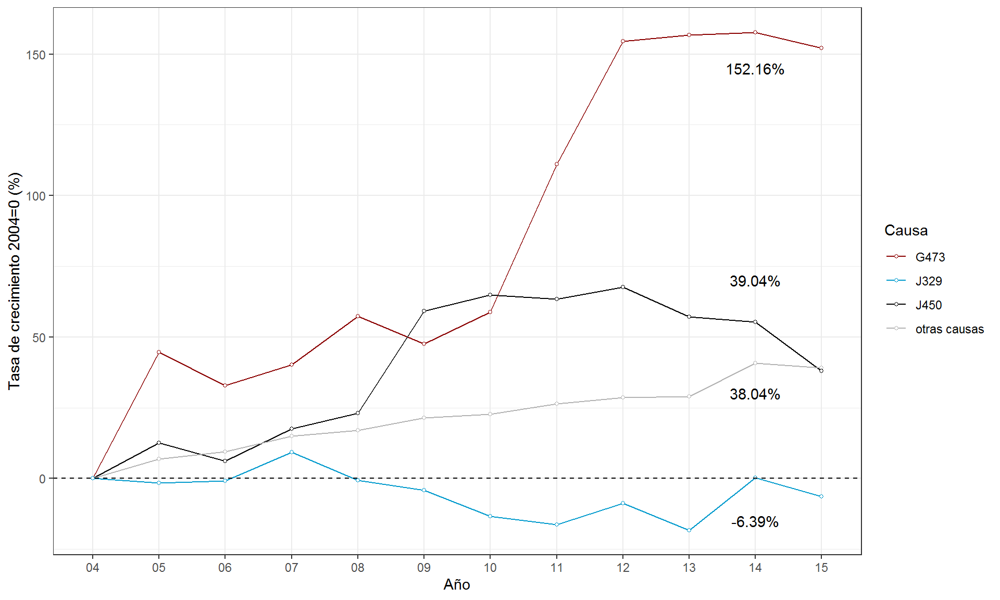

Distribución por edad de egresos hospitalarios y evolución en padecimientos asociados
Con el objetivo de indagar el impacto de la enfermedad sobre los diferentes grupos etarios, se construyen a continuación las curvas de densidad para la distribución de edades en las que ocurren los egresos hospitalarios en el país, información que permitirá conocer el perfil de posibles grupos vulnerables, un aspecto de utilidad para el diseño de estrategias de atención focalizadas.
Figura 4 Distribución edad de egreos Hospitalarios por Rinitis vs. otras causas 2015.
 Fuente: elaboración propia con datos del SINAIS 2009-2015.
Fuente: elaboración propia con datos del SINAIS 2009-2015.
La Figura 4 muestra que la incidencia de casos por rinitis en México supera la trayectoria observada por otras causas entre la población infantil y adolescente hasta los 17 años, así como en el rango entre los 34 y los 53 años. En ambos casos se perciben implicaciones tanto para el diseño de esquemas de atención como en la perspectiva de los impactos sociales, en el primer caso vinculadas al tema de ausentismo escolar mientras en el segundo referidas a perdidas en productividad.
Aunado a los posibles impactos de esta enfermedad, es importante considerar el comportamiento de otros padecimientos asociados o complicaciones comunes que magnifican el costo social de este problema de salud. La Figura 5 presenta la evolución de tres de las afecciones de salud que a menudo han sido reportadas como parte de la problemática que acompaña a la rinitis, estas son: asma predominantemente alérgica (J450), apnea y otros trastornos del sueño (G473) y sinusitis crónica (J329).
Figura 5: Crecimiento en los 3 padecimientos considerados como las complicaciones más comunes. México, 2004-2015

Fuente: elaboración propia con datos del SINAIS 2009-2015.
Los resultados de la estimación indican un ritmo de crecimiento general de los egresos hospitalarios en México entre 2004 y 2015 equivalente a 3.54 por ciento anual. Sin embargo, la trayectoria observada en dos de las tres complicaciones comunes analizadas, superan el escenario de crecimiento general, el caso de asma predominantemente alérgica (J450), mostró un incremento más acentuado a partir de 2008, acompañado de una ligera estabilización hacia el final del periodo. Sin embargo, el ritmo encontrado en padecimientos como apnea y otros trastornos del sueño (G473) cuadruplicó la trayectoria de crecimiento general, alcanzando un acumulado de 158.16 por ciento, lo que equivale a un incremento anual de 13.8 por ciento.
comments powered by Disqus